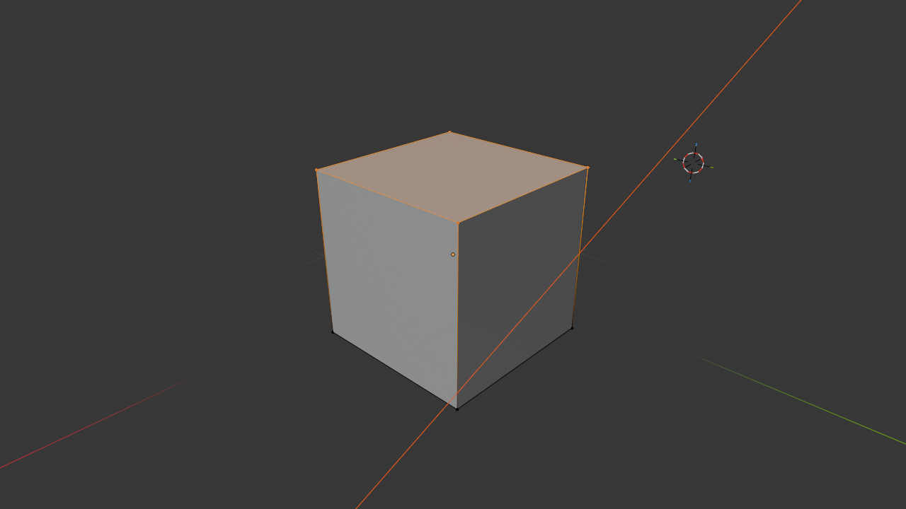
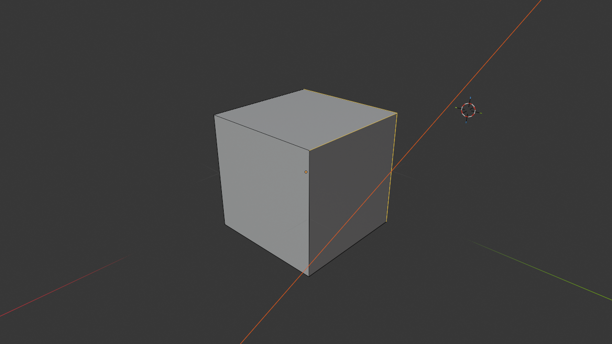
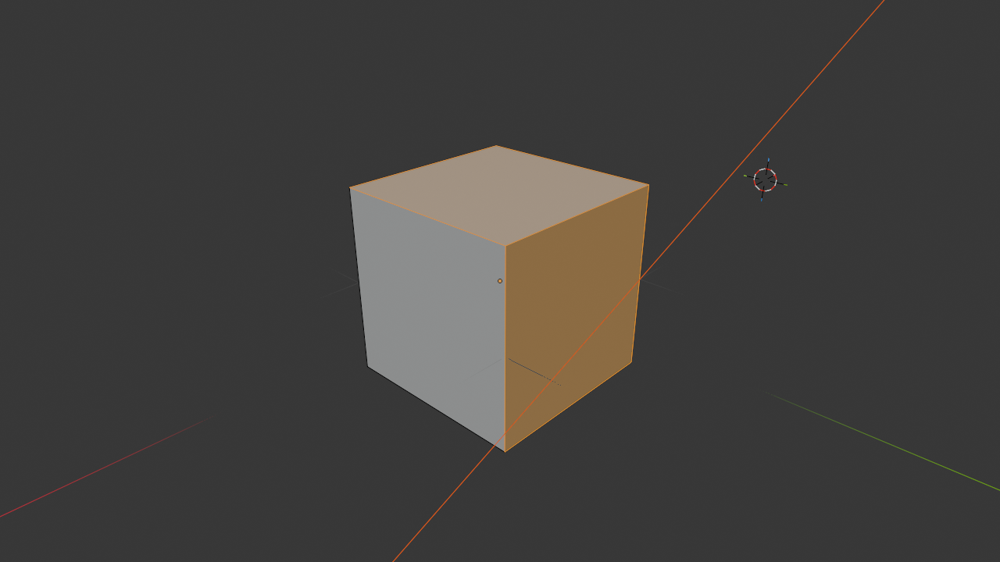
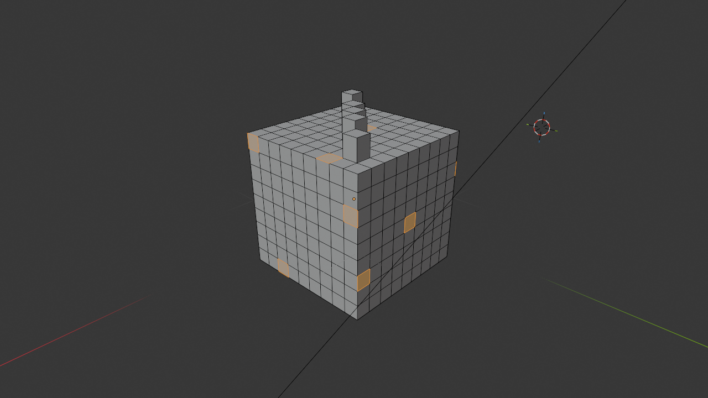
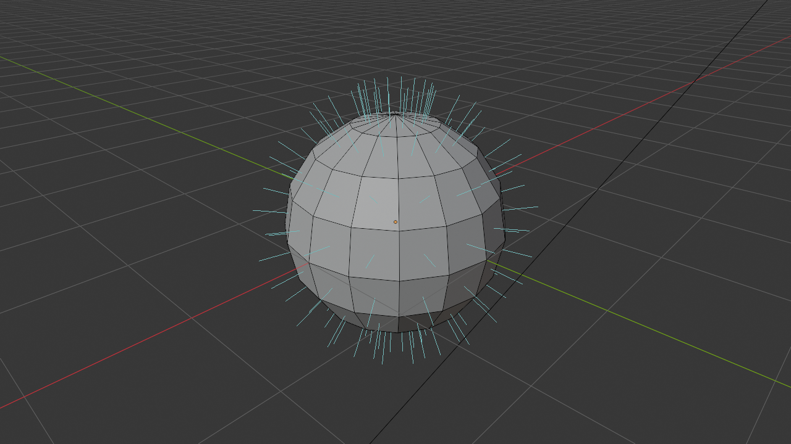
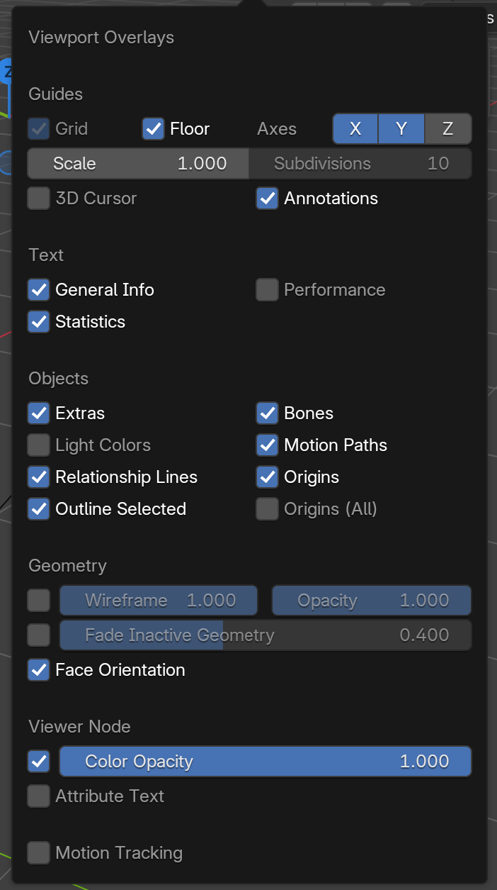
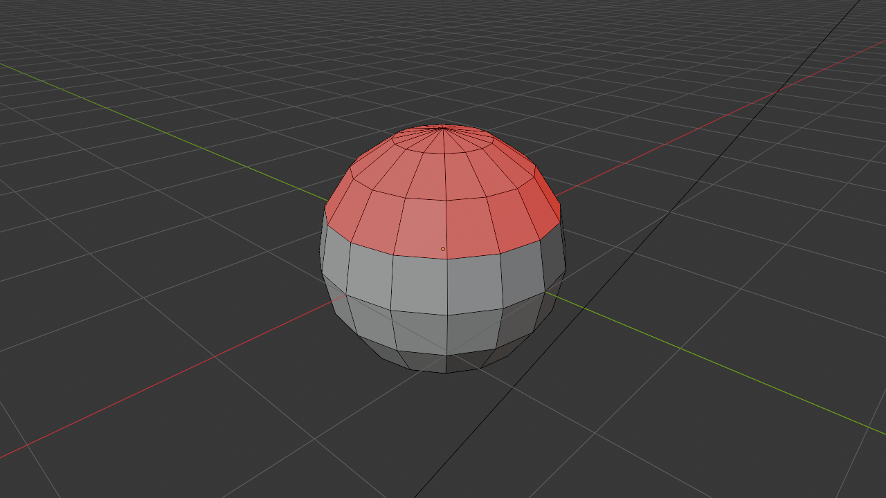

🔷 Understanding Meshes and Geometry
Everything you see in 3D—characters, buildings, props, terrain—is built from the same fundamental building blocks. Like how every physical object is made of atoms, every 3D object is made of vertices, edges, and faces. Understanding these components is the key to creating anything you can imagine in 3D. In this lesson, we'll demystify meshes and give you the foundation for all future modeling work.
📚 What You'll Learn
- What meshes are and how they construct 3D objects
- The three fundamental components: vertices, edges, and faces
- How mesh density affects shape and performance
- Understanding normals and how faces determine inside vs outside
- Different types of mesh geometry (triangles, quads, n-gons)
- Manifold vs non-manifold geometry
- How topology affects deformation and animation
- Best practices for clean mesh construction
⏱️ Estimated Time: 45-60 minutes
🎯 Project: Analyze and understand different mesh types
📑 In This Lesson
🌐 What Are Meshes?
Before diving into the technical details, let's understand what a mesh is at a conceptual level.
The Mesh Concept
Think of a mesh like a wireframe sculpture or a fishing net stretched over a 3D shape. It's a collection of points in space (vertices) connected by lines (edges) that form surfaces (faces). Together, these elements define the shape of a 3D object.
When you see a beautiful, smooth 3D character or a detailed building in Blender, you're actually looking at thousands or millions of these tiny flat surfaces arranged to create the illusion of a continuous form. It's like pixels in a digital image—up close you see the individual pieces, but from a distance they blend into a complete picture.
💡 Real-World Analogy
Imagine building a sphere from paper:
- Low-poly approach: Cut 8 triangular pieces and tape them together—you get an octahedron (diamond shape). It's clearly not a sphere, but it suggests one.
- Medium-poly approach: Cut 50 smaller pieces—now it's starting to look round!
- High-poly approach: Cut 1000 tiny pieces—from a distance, it looks perfectly spherical!
That's exactly how 3D meshes work—more pieces (polygons) = smoother appearance.
Mesh Data vs Object
In Blender, there's an important distinction to understand:
- Object: The container—position, rotation, scale, name, and other properties
- Mesh Data: The actual geometry—the vertices, edges, and faces that define the shape
Think of it like this: the object is the picture frame, and the mesh data is the picture inside. You can move the frame around (transform the object) without changing the picture, or you can edit the picture (modify the mesh) without moving the frame.
Why Understanding Meshes Matters
You might wonder, "Why can't I just move and shape objects without thinking about vertices and edges?" Here's why mesh understanding is crucial:
🎯 Mesh Knowledge Enables You To:
- Create custom shapes: Build anything you imagine, not just primitives
- Optimize performance: Use just enough geometry for smooth appearance without waste
- Prepare for animation: Topology affects how models deform when animated
- Troubleshoot problems: Understand why meshes behave unexpectedly
- Work professionally: Clean topology is expected in production environments
- Use modifiers effectively: Many modifiers require good base topology
- Texture properly: UV unwrapping relies on understanding mesh structure
✅ Try It Now: See the Mesh
- Start with a fresh Blender scene (the default cube is perfect)
- Select the cube
- Look at it in different shading modes (click the shading circles in top-right):
- Wireframe mode: See just the edges—the "skeleton" of the mesh
- Solid mode: See the surfaces but also the edge outlines
- Notice how even a simple cube is made of edges and faces
- Count them: 8 vertices (corners), 12 edges, 6 faces (one per side)
Mesh Types in Blender
Blender offers several primitive mesh types as starting points:
- Plane: Single flat square (4 vertices, 4 edges, 1 face)
- Cube: Six-sided box (8 vertices, 12 edges, 6 faces)
- UV Sphere: Sphere made of rings and segments
- Ico Sphere: Sphere made of triangles (more even distribution)
- Cylinder: Tube shape with circular ends
- Cone: Pointed cylinder
- Torus: Donut shape
- Monkey (Suzanne): Blender's mascot, used for testing
Each primitive has different topology—different arrangements of vertices, edges, and faces. As you progress, you'll learn which primitives make good starting points for different types of models.
The Foundation of Everything: Every complex 3D model you've ever seen—game characters, movie creatures, architectural visualizations, product designs—they're all just vertices, edges, and faces arranged in clever ways. Master these fundamentals, and you can create anything!
🔺 The Building Blocks: Vertices, Edges, Faces
Let's dive deep into the three fundamental components that make up every mesh. Understanding these is absolutely essential for 3D modeling.
Vertices: Points in Space
A vertex (plural: vertices) is a single point in 3D space. It has three coordinates: X, Y, and Z. That's it—just a position. Vertices are the most basic element of a mesh.
📍 Vertex Properties
- Position: X, Y, Z coordinates in 3D space
- No size: Vertices are infinitely small points (no volume)
- Visibility: You can see them in Edit Mode as dots
- Foundation: Everything else is built from vertices
- Selection: You can select and move individual vertices
Think of vertices like dots in a connect-the-dots puzzle. By themselves, they don't create much. But connect them in the right way, and you can create any shape imaginable.
💡 Vertex Analogy
Imagine building a tent. The tent poles' endpoints are like vertices—specific points in space where the structure is anchored. The positions of these points determine the tent's shape, but the points themselves don't have substance—they're just positions.

Edges: Connections Between Vertices
An edge is a straight line connecting two vertices. Edges define the "wireframe" of your mesh—the skeleton or outline of the shape.
📏 Edge Properties
- Two endpoints: Always connects exactly two vertices
- Straight line: Edges are always straight (curves are made of many small edges)
- Defines structure: The edge network creates the mesh's framework
- No area: Edges have length but no width or surface
- Selection: You can select and manipulate individual edges
Edges serve multiple purposes: they define the shape's outline, they can mark hard edges (like the corner of a cube), and they determine where faces can exist.
💡 Edge Analogy
Going back to the tent: the edges are like the tent poles themselves—they connect the anchoring points (vertices) and create the structure's framework. You can see the skeleton of the tent by looking at the poles, just like you can see a mesh's structure by looking at its edges in wireframe mode.

Faces: Surfaces and Polygons
A face is a flat surface formed by connecting three or more vertices with edges. Faces are what you actually see when you look at a 3D object—they're the "skin" of the mesh.
🔷 Face Properties
- Closed loop: Formed by 3+ vertices connected in a loop
- Flat surface: Always perfectly flat (curved surfaces = many small flat faces)
- Has area: Unlike vertices and edges, faces have surface area
- Direction: Faces have a "normal" indicating which side is "out"
- Visible surface: What you see in solid/textured view
- Selection: You can select and manipulate individual faces
Faces are also called polygons or polys. When people talk about "poly count," they're referring to the number of faces in a mesh. More faces = more detail, but also more computational cost.
💡 Face Analogy
The faces are like the tent fabric stretched between the poles. The fabric creates the actual surface—it's what keeps the rain out and creates the enclosed space. Without faces, you'd just have a wireframe skeleton. With faces, you have a complete surface.

How They Work Together
Here's the hierarchy and relationship:
- Vertices exist first: You place points in space
- Edges connect vertices: Lines form between points
- Faces fill between edges: Surfaces span the framework
You can't have an edge without two vertices. You can't have a face without edges forming a closed loop. They're interdependent.
✅ Try It Now: Examine a Cube's Components
- Select the default cube in Blender
- Press
Tabto enter Edit Mode - Look at the top-left of the viewport—see three icons (vertex, edge, face selection modes)
- Click the vertex select icon (dot) or press
1:- You see 8 dots (vertices) at the cube's corners
- Click on one—it highlights orange
- Click the edge select icon (line) or press
2:- You see 12 lines (edges) forming the cube's outline
- Click on one—it highlights
- Click the face select icon (triangle) or press
3:- You see 6 surfaces (faces), one per side
- Click on one—it highlights
- Press
Tabto return to Object Mode
You just explored the fundamental building blocks of 3D!

Component Count and Complexity
The relationship between these components determines mesh complexity:
📊 Simple Mesh Examples
| Object | Vertices | Edges | Faces |
| Plane (1 square) | 4 | 4 | 1 |
| Cube | 8 | 12 | 6 |
| UV Sphere (default) | 482 | 960 | 480 |
| Suzanne (Monkey) | 507 | 1005 | 500 |
Notice how the complexity scales up dramatically. A simple cube is 8 vertices. A basic sphere is 482 vertices. Complex character models can have hundreds of thousands of vertices!
The Artist's Perspective: Beginning modelers often think in terms of whole objects—"I'm making a chair" or "I'm building a car." But experienced modelers think in terms of vertices, edges, and faces—"I'll extrude these faces," "I'll add an edge loop here," "I'll merge these vertices." Learning to think at the component level is the shift from user to artist.
🎚️ Mesh Density and Resolution
One of the most important concepts in 3D modeling is mesh density—how many polygons are used to define a shape. This directly affects both visual quality and performance.
Understanding Mesh Density
Mesh density refers to how tightly packed the vertices, edges, and faces are in a given area. Think of it like image resolution: a low-resolution image has large, visible pixels; a high-resolution image has tiny, imperceptible pixels.
📈 Density Levels
- Low-poly: Few polygons, angular appearance, runs fast
- Medium-poly: Balanced detail and performance
- High-poly: Many polygons, smooth appearance, computationally expensive
- Subdivided: Extremely high poly count, used for sculpting and final renders
The Density Trade-off
More polygons give you smoother curves and finer details, but they also:
- Slow down viewport performance
- Increase file size
- Make editing more cumbersome
- Take longer to render
- Require more memory
Fewer polygons run faster and are easier to work with, but they:
- Show visible faceting on curves
- Limit detail you can add
- Look less realistic close-up
- May not deform well when animated
✅ Try It Now: Compare Sphere Densities
- Add a UV Sphere:
Shift + A→ Mesh → UV Sphere - Notice the default settings in the bottom-left: Segments and Rings
- Before doing anything else, lower Segments to 8 and Rings to 4
- You get a very low-poly sphere—looks like a diamond!
- Delete it and add another sphere
- This time set Segments to 64 and Rings to 32
- Much smoother, but also much heavier (more geometry)
- Delete it and add a default sphere (32 segments, 16 rings)
- This balanced middle ground works for most purposes
When to Use Different Densities
🎮 Low-Poly Use Cases
- Real-time applications: Video games, VR, AR
- Background objects: Things far from camera
- Stylized art: Intentionally geometric aesthetic
- Prototyping: Blocking out scenes quickly
- Mobile applications: Limited hardware resources
🎬 High-Poly Use Cases
- Close-up renders: Objects near the camera
- Film and animation: Where performance is less critical
- Sculpting: Organic modeling needs dense geometry
- Product visualization: Smooth, photorealistic appearance
- Hero assets: Main characters or important objects
The "Enough Detail" Principle
Professional modelers follow this rule: Use only as much geometry as needed to define the shape clearly. Don't add detail that won't be visible in the final output.
💡 Optimization Strategy
Think about how the object will be used:
- Will it be seen up close? → Needs more detail
- Will it animate or deform? → Needs good edge flow
- Is it for real-time use? → Keep it low-poly
- Is it a background element? → Minimal geometry is fine
Always model with the end use in mind!
The Subdivision Solution: Many artists model in low-poly (fast to work with) and then use a Subdivision Surface modifier to smooth it for rendering (detailed when needed). This "best of both worlds" approach is standard in production. We'll explore subdivision in depth later!
🧭 Normals: Inside vs Outside
Every face in a mesh has a direction—a "normal" that points outward from the surface. Understanding normals is crucial for proper rendering and avoiding mysterious shading issues.
What Are Normals?
A normal is an invisible arrow perpendicular to a face, pointing in the direction the face is "facing." Think of it as the face saying "this side is the outside."
🎯 Normal Properties
- Perpendicular: Sticks straight out from the face surface
- Direction: Indicates which side of the face is "outside"
- Invisible: Normals don't render, they affect how faces are shaded
- Per-face: Each face has its own normal direction
- Affects rendering: Determines how light interacts with surfaces
💡 Normal Analogy
Imagine a piece of paper. One side is white (outside), one side is black (inside). The normal is like an arrow drawn on the white side pointing away from the paper. That arrow tells the renderer "show the white side when you look from this direction."

Why Normals Matter
Normals determine several crucial aspects of rendering:
- Face visibility: Faces with normals pointing away from camera may not render (backface culling)
- Shading direction: Light calculations use normals to determine brightness
- Smoothness: Normal averaging creates smooth shading between faces
- Texture orientation: Normals affect how textures are applied
✅ Try It Now: See Face Normals
- Select the default cube
- Press
Tabto enter Edit Mode - Look for the overlay dropdown in the top-right (two overlapping circles icon)
- Click it and find "Face Orientation"—enable it
- Your cube faces turn blue (normals pointing correct direction)
- Or go to the viewport overlays and enable "Normals" under "Developer"
- You'll see little blue lines sticking out from faces—those are the normals!

Flipped Normals: A Common Problem
Sometimes faces have normals pointing the wrong way—inward instead of outward. This causes rendering problems:
- Faces appear black or don't render at all
- Objects look inside-out
- Shading looks wrong
- Transparency doesn't work correctly

⚠️ Fixing Flipped Normals
The solution: Recalculate normals
- Enter Edit Mode (
Tab) - Select all (
A) - Press
Shift + N(or Alt + N for normals menu) - This recalculates normals to point outward correctly
This fixes 99% of normal issues!
Smooth vs Flat Shading
Blender can shade faces in two ways, both related to normals:
🔷 Flat Shading
Each face uses only its own normal—faces are distinctly visible with hard edges between them.
Use for: Hard-surface objects, mechanical parts, stylized low-poly art
🔵 Smooth Shading
Face normals are averaged with neighboring faces—creates illusion of smooth surface even with low poly count.
Use for: Organic objects, characters, smooth surfaces, anything that should look rounded
✅ Try It Now: Smooth vs Flat
- Add a UV Sphere:
Shift + A→ Mesh → UV Sphere - In Object Mode, right-click on the sphere
- Select "Shade Flat"
- The sphere looks faceted—you can see every polygon!
- Right-click again and select "Shade Smooth"
- Now it looks perfectly round, even though the geometry hasn't changed!
- This is the power of normal averaging
Smooth shading is often called "vertex normal smoothing"—it averages the normals of all faces touching each vertex, creating a gradient of lighting across surfaces instead of hard breaks.
Professional Tip: Most organic models use smooth shading. Most hard-surface models use a combination—smooth shading overall with "sharp edges" marked at corners to preserve crispness. Getting smooth/sharp balance right is a key skill in professional modeling!
🔺 Triangles, Quads, and N-gons
Not all faces are created equal! The number of sides a face has affects how it behaves, especially during subdivision and animation. Let's explore the three types of polygons.
Triangles (Tris): Three-Sided Faces
A triangle is a face made of exactly three vertices and three edges. Triangles are the simplest possible polygon.
🔺 Triangle Characteristics
- Always planar: Three points always define a flat plane—never twisted or warped
- Stable: Won't cause shading artifacts
- Game engines: All geometry converts to triangles for rendering
- Subdivision: Can create uneven results when subdivided
- Deformation: Can cause pinching when object bends
Quads (Quadrilaterals): Four-Sided Faces
A quad is a face made of exactly four vertices and four edges. Quads are the gold standard in 3D modeling.
🔷 Quad Characteristics
- Preferred topology: Industry standard for most modeling
- Subdivision friendly: Subdivides predictably and evenly
- Animation ready: Deforms smoothly when rigged
- Clean loops: Creates nice edge loops for control
- Professional standard: Expected in production environments
N-gons: Five or More Sides
An n-gon is any face with five or more sides. The "n" stands for "any number."
⬡ N-gon Characteristics
- Can cause problems: May create shading artifacts
- Non-planar risk: More vertices = higher chance of being twisted/warped
- Subdivision issues: Unpredictable subdivision results
- Export problems: Some formats/engines don't support them
- Sometimes acceptable: On flat surfaces that won't subdivide or deform
💡 The Quad Rule
Professional modeling guideline: "Use quads wherever possible, triangles when necessary, n-gons rarely."
Quads should make up 90%+ of your mesh for animation or subdivision. Triangles are acceptable in areas that won't deform. N-gons should only exist on perfectly flat surfaces that will never subdivide or animate.
When Each Type Is Acceptable
✅ Acceptable Triangle Use
- Terminating edge loops in hard-surface modeling
- Details that won't deform (bolts, rivets, small details)
- Final export for game engines (they convert quads to tris anyway)
- Areas hidden from view
✅ Acceptable N-gon Use
- Perfectly flat surfaces (floors, walls, simple panels)
- Objects that will never subdivide or animate
- Temporary modeling (convert to quads before finalizing)
- Areas that will be deleted or boolean-ed later
✅ Try It Now: Identify Polygon Types
- Add a UV Sphere
- Enter Edit Mode (
Tab) - Select face mode (
3) - In the top menu: Select → Select All by Trait → Triangles
- All triangular faces highlight—notice the top and bottom?
- Press
Alt + Ato deselect - Select → Select All by Trait → Quads
- The middle section is all quads!
- This is typical sphere topology—quads in the middle, triangles at poles
Converting Between Types
Blender provides tools to convert between polygon types:
- Triangulate: Convert quads/n-gons to triangles (Ctrl+T in Edit Mode)
- Tris to Quads: Merge triangles into quads where possible (Alt+J in Edit Mode)
- Poke Faces: Add center vertex and create triangles from it
We'll practice these conversions extensively when we get to active modeling lessons!
The Quad Obsession: You'll hear "all quads" repeated constantly in 3D communities. While it's good advice, don't stress about achieving 100% quads—even professional models have some triangles. The goal is good topology that serves your needs, not religious adherence to quad purity. That said, starting with good quad habits will save you headaches later!
🌊 Topology and Edge Flow
Topology refers to how the vertices, edges, and faces are arranged and connected—the "flow" of the mesh structure. Good topology is invisible when things work right, but bad topology causes obvious problems.
What Is Topology?
Topology is the arrangement and connection pattern of your mesh components. Two objects can have the same shape but completely different topology—like two road networks getting to the same destination via different routes.
💡 Topology Analogy
Think of a city's street layout. Two cities might cover the same area, but one has a logical grid pattern (good topology) while another has chaotic, random streets (bad topology). Both technically work, but one makes navigation and planning much easier. Mesh topology works the same way!
Edge Flow and Edge Loops
Edge flow refers to how edges connect across the mesh surface. Good edge flow follows the contours and natural forms of your object.
🔄 Edge Loops
An edge loop is a connected series of edges that form a complete loop around the mesh. Think of them like latitude lines on a globe—they wrap around continuously.
Why edge loops matter:
- Easy to select entire loop at once (Alt+Click)
- Allow controlled subdivision
- Follow natural contours for animation
- Enable proportional deformation
- Make UV unwrapping predictable
✅ Try It Now: Select Edge Loops
- Add a UV Sphere or Cylinder
- Enter Edit Mode (
Tab) - Switch to edge select mode (
2) - Hold
Altand click on any horizontal edge - The entire loop around the sphere/cylinder selects!
- Try Alt+clicking vertical edges—different loops select
- These loops are fundamental to good modeling workflow
Why Topology Matters
Good topology affects almost everything you'll do with a model:
🎯 Topology Impact Areas
- Animation/Deformation: Models bend and flex along edge flow
- Character joints need loops around them
- Facial expressions require loops around eyes, mouth
- Bad topology causes pinching and distortion
- Subdivision: How smoothly model subdivides
- Quads subdivide evenly
- Triangles and n-gons create artifacts
- Edge flow determines smooth/sharp areas
- UV Unwrapping: How textures map to surfaces
- Clean loops create clean UV seams
- Poor topology makes unwrapping difficult
- Edge flow determines stretch and distortion
- Sculpting: How detail can be added
- Even topology takes sculpting better
- Bad flow creates lumpy details
- Retopology often needed for sculpted models
Topology Patterns
Professional modelers recognize and use standard topology patterns:
🔷 Common Patterns
- Pole: Point where 3, 5, or more edges meet (sometimes unavoidable)
- 3-pole (triangle): Generally okay
- 5-pole (n-gon): Minimize, keep away from deformation areas
- 6+ poles: Usually problematic
- Grid Pattern: Regular quad grid—ideal for flat/simple surfaces
- Radial Pattern: Loops radiating from center—good for holes/circles
- Flow Lines: Edges following muscle direction on characters
Bad Topology: What to Avoid
⚠️ Topology Problems
- Uneven quad sizes: Huge faces next to tiny ones
- Long thin faces: Create shading artifacts
- Triangles in deformation zones: Cause pinching when bent
- N-gons anywhere important: Unpredictable behavior
- Edge flow fighting natural contours: Makes deformation look unnatural
- Poles in bendable areas: Create distortion during animation
Learning Good Topology
Topology is one of those skills that improves with experience. When starting out:
- Study existing models: Look at professional models in wireframe
- Follow tutorials carefully: Notice why instructors place loops where they do
- Start with reference topology: Look up "character head topology" or similar
- Practice retopology: Take a sculpted model and rebuild with clean quads
- Test your models: Subdivide and deform them—see where problems appear
The Topology Journey: Don't stress about perfect topology when you're learning. Focus first on creating shapes you want. As you gain experience, you'll naturally start noticing topology patterns and making better decisions. Even professionals sometimes rebuild models when topology isn't working—it's part of the process!
🔧 Manifold vs Non-Manifold Geometry
Manifold geometry is a fancy term for "water-tight" meshes—models that define a clear inside and outside with no holes, gaps, or weird edge configurations.
What Is Manifold Geometry?
A manifold mesh is one where every edge connects exactly two faces. This creates a closed, solid-seeming object. Think of it like a balloon—there's clearly an inside and an outside, with no ambiguity.
✅ Manifold Characteristics
- Every edge has exactly 2 faces (not 1, not 3, exactly 2)
- No holes or gaps in the surface
- Clear inside and outside distinction
- Suitable for 3D printing and boolean operations
- Predictable modifier behavior
Non-Manifold Geometry Problems
Non-manifold geometry has edges or vertices that violate the "exactly 2 faces per edge" rule. Common non-manifold issues:
⚠️ Non-Manifold Edge Types
- Boundary edge: Edge with only 1 face (creates a hole)
- Like a torn piece of paper—has an open edge
- Common when deleting faces
- Triple edge: Edge with 3 or more faces
- Like three pieces of paper meeting at one line
- Causes ambiguity—which direction is "inside"?
- Isolated vertex: Vertex not connected to any edges
- Floating point in space
- Usually accidental, left behind from deleted geometry
- Wire edge: Edge not connected to any faces
- Floating line in space
- Often leftover from modeling operations
💡 When Non-Manifold Is a Problem
Critical for:
- 3D printing (printer needs solid object definition)
- Boolean operations (union, difference, intersection)
- Some game engines (require manifold geometry)
- Physical simulations (cloth, fluid need closed surfaces)
Often okay for:
- Visual-only models (renders, animations)
- Stylized art (intentional open edges)
- Planes and cards (single-sided geometry)
Detecting Non-Manifold Geometry
✅ Finding Non-Manifold Elements
In Edit Mode:
- Deselect all (
Alt + A) - Go to Select menu → Select All by Trait → Non-Manifold
- All non-manifold elements highlight!
- Or use shortcut:
Shift + Ctrl + Alt + M - Fix these elements by:
- Filling holes with
F - Deleting isolated vertices/edges with
X - Removing doubles with
M→ Merge by Distance
- Filling holes with
Fixing Common Non-Manifold Issues
🔧 Quick Fixes
- Holes (boundary edges):
- Select the edge loop around the hole
- Press
Fto fill with faces - Or use Alt+F for grid fill
- Duplicate vertices (appears as wire edges):
- Select all (
A) - Press
M→ Merge by Distance - Removes overlapping vertices
- Select all (
- Isolated vertices/edges:
- Select them
- Press
X→ Vertices (or Edges) - Simply delete them
- Triple edges (3+ faces on one edge):
- Usually requires manual fixing
- Separate the faces that shouldn't connect
- Rebuild geometry properly
Manifold Mindset: For visualization and animation, non-manifold geometry often doesn't matter—it renders fine. But getting in the habit of building manifold meshes makes your life easier when you do need it (3D printing, booleans, etc.). Clean meshes are professional meshes!
🎯 Project: Explore Mesh Structure
Now let's apply everything you've learned by analyzing and comparing different mesh types. This hands-on exploration will cement your understanding of mesh fundamentals.
Project Overview
🎨 Project Goal
You'll create several primitive objects, examine their structure, modify their density, and understand how different mesh properties affect their appearance and behavior.
What you'll do:
- Create and analyze different primitive meshes
- Compare low-poly vs high-poly versions
- Identify vertices, edges, and faces
- Find and understand polygon types
- Detect and fix non-manifold geometry
- Practice smooth vs flat shading
Estimated time: 25-30 minutes
Part 1: Primitive Analysis
📊 Exercise 1: Count the Components
- Start with a fresh Blender scene
- Delete the default cube
- Add a Plane (
Shift + A→ Mesh → Plane) - Enter Edit Mode (
Tab) - Look at the top of the viewport—you'll see vertex/edge/face counts:
- Vertices: 4
- Edges: 4
- Faces: 1
- Write these numbers down in your learning journal
- Switch between vertex (
1), edge (2), face (3) selection modes - Visualize how 4 points connect with 4 lines to create 1 surface
📊 Exercise 2: Compare Primitives
Repeat the analysis for each primitive. Record the counts:
| Object | Vertices | Edges | Faces |
| Plane | 4 | 4 | 1 |
| Cube | _____ | _____ | _____ |
| UV Sphere (default) | _____ | _____ | _____ |
| Cylinder (default) | _____ | _____ | _____ |
Fill this in as you analyze each primitive!
Part 2: Density Exploration
🎚️ Exercise 3: Low vs High Poly Spheres
- Delete all objects in your scene
- Add UV Sphere → In bottom-left, set Segments: 8, Rings: 4
- This is a very low-poly sphere (looks like a diamond)
- Move it to the left:
GX-3Enter - Add another UV Sphere → Set Segments: 32, Rings: 16 (default)
- Add third UV Sphere → Set Segments: 128, Rings: 64
- Move it right:
GX3Enter - Compare all three in wireframe mode (first shading circle)
- Notice the density difference!
- Enter Edit Mode on each and check the vertex counts
🔍 Exercise 4: Smooth vs Flat Comparison
- With your three spheres still in the scene
- Select the low-poly sphere (8 segments, 4 rings)
- Right-click → Shade Flat
- Very faceted—you see every polygon clearly!
- Right-click → Shade Smooth
- Looks much rounder, even with few polygons
- Do the same with the medium-poly sphere
- Notice: smooth shading makes a huge difference on low-poly
- The high-poly sphere looks smooth either way
Part 3: Polygon Type Investigation
🔺 Exercise 5: Find Triangles and Quads
- Create a new UV Sphere (default settings)
- Enter Edit Mode
- Switch to Face selection mode (
3) - Go to Select → Select All by Trait → Triangles
- Notice which faces select—the poles (top and bottom)!
- Press
Alt + Ato deselect - Select → Select All by Trait → Quads
- The entire middle section—all quads!
- This is typical sphere topology: quads everywhere except poles
- Count how many triangles vs quads (look at selection info at top)
⬡ Exercise 6: Create and Identify N-gons
- Add a new Cube
- Enter Edit Mode
- Select one face
- Press
Ito inset (we'll learn this later, just follow along) - Move mouse inward slightly, click to confirm
- Press
X→ Faces to delete the inner face - Now you have a square border—this is an n-gon (8 sides)!
- Go to Select → Select All by Trait → N-gons
- The border face selects—it's an octagon!
Part 4: Normals and Direction
🧭 Exercise 7: Visualize Normals
- Create a UV Sphere
- Enter Edit Mode
- Click the overlays dropdown (two circles icon, top-right)
- Scroll down to find "Normals" section
- Enable face normals and/or vertex normals
- Adjust the size slider so you can see the blue lines
- These lines show which way faces point—they all point outward!
- Select one face
- Press
Alt + N→ Flip - That face's normal now points inward—see the line reversed?
- This face will render incorrectly!
- Fix it: Select all (
A), pressShift + Nto recalculate
Part 5: Manifold Geometry Check
🔧 Exercise 8: Find Non-Manifold Elements
- Create a Cube
- Enter Edit Mode
- Select one face and delete it (
X→ Faces) - Now you have a hole—non-manifold geometry!
- Deselect all (
Alt + A) - Go to Select → Select All by Trait → Non-Manifold
- The edges around the hole select—these are boundary edges!
- Each edge only has 1 face (should have 2 for manifold)
- Fill the hole: With edges selected, press
F - Check again for non-manifold—nothing selects now!
- The mesh is manifold again
Part 6: Edge Loop Practice
🔄 Exercise 9: Select Edge Loops
- Add a Cylinder or UV Sphere
- Enter Edit Mode
- Switch to Edge selection mode (
2) - Hold
Altand click different edges - Watch entire loops select!
- On cylinder: horizontal loops go around, vertical loops go up
- On sphere: multiple loop directions possible
- Try
Shift + Alt + Clickto add multiple loops to selection - This is how professionals work—selecting loops, not individual edges
Project Success Checklist
✅ Project Completion
You've successfully completed this project when you can:
- ✅ Identify vertices, edges, and faces by sight
- ✅ Count mesh components for any object
- ✅ Understand the relationship between density and smoothness
- ✅ Distinguish between triangles, quads, and n-gons
- ✅ Select specific polygon types
- ✅ Visualize and understand face normals
- ✅ Fix flipped normals with recalculation
- ✅ Apply smooth vs flat shading appropriately
- ✅ Find and fix non-manifold geometry
- ✅ Select edge loops confidently
- ✅ Understand why topology matters
Reflection Questions
📝 Journal Prompts
Write brief answers in your learning journal:
- What surprised you most about mesh structure?
- Why do UV spheres have triangles at the poles but quads everywhere else?
- When would you use a low-poly mesh vs high-poly mesh?
- What's the difference between smooth shading and adding more geometry?
- Why does manifold geometry matter for 3D printing but not always for rendering?
- How do edge loops make modeling easier?
Foundation Complete: You now understand what meshes actually are—not just shapes you push around, but structured collections of components with specific properties and behaviors. This knowledge forms the foundation for everything you'll do in Edit Mode. When you start actively modeling in the next lesson, you'll understand WHY things work the way they do!
📝 Lesson Summary
Congratulations! You've completed your deep dive into mesh fundamentals. This theoretical knowledge will inform every practical modeling decision you make going forward.
🎓 Key Takeaways
- Meshes are built from three components—vertices (points), edges (lines), and faces (surfaces)
- Mesh density is a performance-quality trade-off—more polygons = smoother but slower
- Normals define face direction—which side is "outside" affects rendering and shading
- Quads are preferred for most modeling—they subdivide predictably and deform well
- Topology is the arrangement pattern—good topology follows form and enables animation
- Edge loops are fundamental to workflow—they follow contours and enable efficient selection
- Manifold geometry has no holes or ambiguity—every edge connects exactly two faces
- Smooth shading uses normal averaging—creates illusion of smoothness without adding geometry
What You've Accomplished
In this lesson, you:
- Learned what meshes are and how they construct 3D objects
- Understood the three fundamental components and their relationships
- Explored mesh density and its effect on appearance and performance
- Discovered how normals determine face direction and shading
- Distinguished between triangles, quads, and n-gons
- Learned about topology and edge flow
- Understood manifold vs non-manifold geometry
- Practiced analyzing and comparing different mesh structures
- Built a foundation for active modeling work
Essential Concepts Reference
📚 Quick Reference Guide
Mesh Components
- Vertex: Point in 3D space (X, Y, Z coordinates)
- Edge: Straight line connecting two vertices
- Face: Flat surface formed by 3+ connected vertices
Polygon Types
- Triangle (Tri): 3 sides—stable, always flat
- Quad: 4 sides—preferred, subdivision-friendly
- N-gon: 5+ sides—avoid except on flat surfaces
Important Terms
- Normal: Direction a face is pointing (perpendicular arrow)
- Topology: Arrangement and connection pattern of mesh components
- Edge Loop: Connected series of edges forming a continuous loop
- Manifold: Every edge has exactly 2 faces—"water-tight" mesh
- Pole: Vertex where 3, 5, or more edges meet
Key Shortcuts (Edit Mode)
1/2/3— Vertex / Edge / Face selection modeAlt + Click— Select edge loopShift + N— Recalculate normals (fix flipped faces)Shift + Ctrl + Alt + M— Select non-manifold geometry
Common Questions
❓ "Do I need to remember all this theory for modeling?"
You don't need to consciously think about vertices and edges while modeling—it becomes intuitive. But understanding these concepts helps you make better decisions, troubleshoot problems, and understand why certain operations work the way they do. It's like learning music theory—you don't actively think about it while playing, but it informs your choices.
❓ "Should I always aim for perfect quad topology?"
Perfect quads everywhere is an ideal, not always realistic. Aim for quads in areas that will deform (character joints, facial features). Triangles are fine in areas that won't bend. N-gons are acceptable on flat surfaces. Don't stress about 100% quads—focus on good topology where it matters!
❓ "When do I use smooth vs flat shading?"
Smooth shading: Organic objects, characters, anything meant to look rounded. Flat shading: Hard-surface objects, mechanical parts, intentionally faceted looks. Most objects use smooth shading with "sharp edges" marked at hard corners—we'll learn this technique in future lessons!
❓ "How do I know if my mesh density is right?"
Start lower than you think you need. You can always add detail with subdivision or additional geometry. It's harder to reduce excess geometry. Test by: (1) viewing from render distance, (2) checking if curves look smooth enough, (3) considering end use (game = lower, film = higher), (4) testing deformation if it will animate.
Looking Ahead
Now that you understand mesh structure, you're ready to actively create and modify geometry! In the next lesson, we'll dive into Edit Mode Essentials:
- Entering and navigating Edit Mode
- Selection techniques for vertices, edges, and faces
- Basic mesh editing operations (extrude, inset, bevel)
- Working with edge loops and subdivisions
- Your first custom modeled object
You'll take all this theoretical knowledge and put it into practice, actually shaping meshes to create custom objects!
💡 Before the Next Lesson
Reinforce your understanding by:
- Examine existing models: Download free models and look at them in wireframe
- Practice visualization: Look at physical objects and imagine their mesh structure
- Explore primitives: Add different primitives and analyze their topology
- Review terms: Make sure you understand vertices, edges, faces, normals, topology
- Watch topology videos: Search for "good topology examples" online
🎯 You Now Understand 3D Structure!
You see beyond the surface now—every smooth character, detailed building, or organic creature is just vertices, edges, and faces cleverly arranged. You understand the building blocks that construct entire 3D worlds.
Next up: We're going hands-on! Time to enter Edit Mode and start actually creating custom geometry!
The Foundation Is Set: This was a theory-heavy lesson, and that's intentional. Understanding these fundamentals means every modeling tutorial, every technique you learn will make sense. You'll understand WHY to do things certain ways, not just memorize steps. This knowledge pays dividends for your entire 3D career!
— Ready to build? Let's model! 🛠️